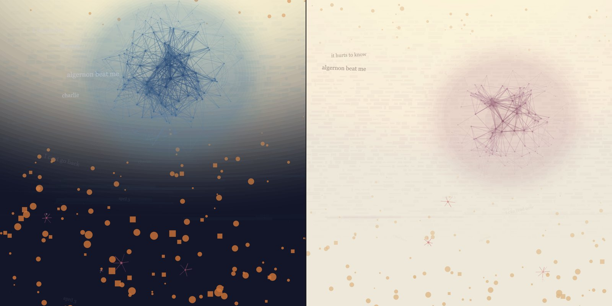
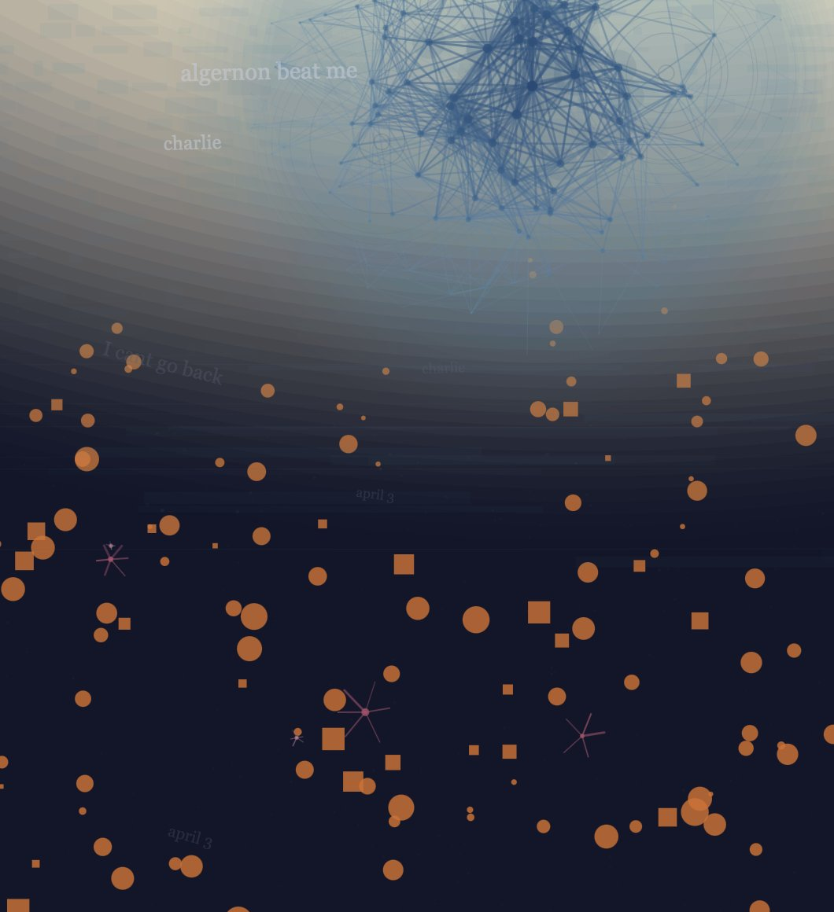

Additional · A-02
Flowers for Algernon
A generative visualisation of Charlie Gordon’s intelligence arc, where one mathematical function governs every dot, colour and word on the canvas. Click to regenerate; no two compositions are the same.
Concept
One function, one arc
In Daniel Keyes’ novel, Charlie Gordon undergoes surgery that raises his intelligence to genius level, then watches it recede. The story is a rise and a fall, and Charlie is never only one of the two men he becomes.
The obvious way to draw that is a line chart. I wanted the arc to be the structure of the image rather than a shape drawn inside it, so I mapped it to the Y axis of the canvas and made one function the single source of truth for the entire composition.
The whole system
function iq(y) {
let d = y - peakY;
return exp(-(d * d) / (2 * bellCurveW * bellCurveW));
}
A Gaussian curve. Returns 1 at the peak of Charlie’s arc and falls toward 0 in both directions. Every visual property in the piece reads from this one value.
Dot size, colour saturation, opacity, whether a word appears legibly or as an
illegible scrawl: all of it derives from iq(y).
Nothing is positioned by eye. If a mark sits high on the arc it is bright and
sharp; if it sits low it is dim and blurred, automatically.
Approach
Four decisions
A Gaussian, not a hand-drawn curve
Why the maths came firstI could have keyframed the arc by hand, but then every new layer would need its own tuning and the layers would drift out of agreement. Going to the Gaussian formula meant one line of code kept nine drawing routines in perfect sync.
It also gave me a single dial. Changing bellCurveW
widens or narrows Charlie’s window of lucidity, and the entire
image reorganises itself around the new arc.
Legibility as the emotional variable
The idea I’m proudest ofText appears in three zones. Near the peak: clear, level, readable phrases. Below it: tilting, fading, half-present. At the bottom of the canvas: small scrawls at steep angles, and the words there are Charlie’s own misspellings: progris riport.
The novel is written as Charlie’s journal, so his spelling and grammar improve and then decay along with him. Encoding that into typography meant the reader feels the arc before they consciously read a single word.
Polar coordinates with a square-root bias
A distribution problem with a non-obvious fixThe neural sphere places 160–240 nodes. Scattering them with a uniform random radius produces a ring: the points bunch at the edge, because the outer band has more area than the core.
Taking the square root of the random value corrects the distribution and gives a cluster that’s genuinely denser at the centre. 15% of nodes are then pushed deliberately outside the boundary as stray connections reaching for something out of range.
Three palettes, one click apart
Three Charlies, not three colourwaysCream and green for the simple Charlie before the surgery. Deep midnight blue for the genius, brilliant, and alone. Warm bone and rose for the Charlie who has seen both and is losing one of them.
Clicking cycles the palette and regenerates the composition, so the viewer moves through his life rather than comparing swatches.
Systems
Nine layers
Drawn in a fixed order, but two of them are probabilistic: memory rings appear 60% of the time, glitch fractures 70%. That gap is what stops repeated clicks from feeling like variations on one image.
Foundation
The ground the composition sits on: grain, and a soft directional wash.
Arc-driven
Clinical rectangles for the measurements; warm amber dots for the man
being measured. Both read their brightness from iq(y).
Neural sphere
160–240 nodes with a depth value from core to edge, connected where they fall close enough together.
Probabilistic
Present or absent per generation. Absence is part of the design.
Text fragments
Thirteen phrases from the journal, distributed across the three legibility zones.
Flowers
Two to four in the lower canvas. Just over half the time a smaller second flower appears beside one of them: Algernon.
Output
The output


Process
What I cut
The first version had a cream background, taken from the Chinese edition’s book cover. It was pleasant and it was wrong. Charlie is not someone who lived in the light; he is someone who kept trying to find it. Moving to a dark ground made the whole piece read correctly, and it changed nothing about the code, only the palette values.
I also built and deleted a layer called LonelinessLine. At the opacity the composition needed, it was simply invisible against the dark background. Rather than raise the opacity and unbalance everything else, I removed it; the idea was already carried by the stray nodes reaching outside the sphere.
Deleting a layer you spent an evening on is harder than adding one. It’s also usually the right call.
Reflection
What I’d change
- Fixed 800×800 canvas. The composition is built around absolute pixel values, so it can’t adapt to the viewport. Working in ratios from the start would have cost nothing and made it responsive.
- Palettes as thirty loose variables. Each palette unpacks into individual R, G and B globals. It works, but a nested object accessed directly would have removed sixty lines and a whole category of typo.
- No way to save a generation. Every click destroys the previous composition permanently. A save key would have been four lines and I regret not adding it.
- Click is the only input. Exposing
bellCurveWas a slider would let a viewer widen or narrow Charlie’s lucid window themselves, which is a more interesting question than which palette they prefer.